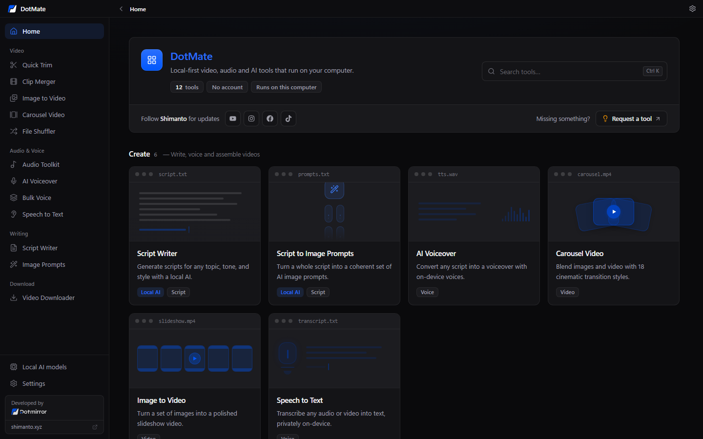
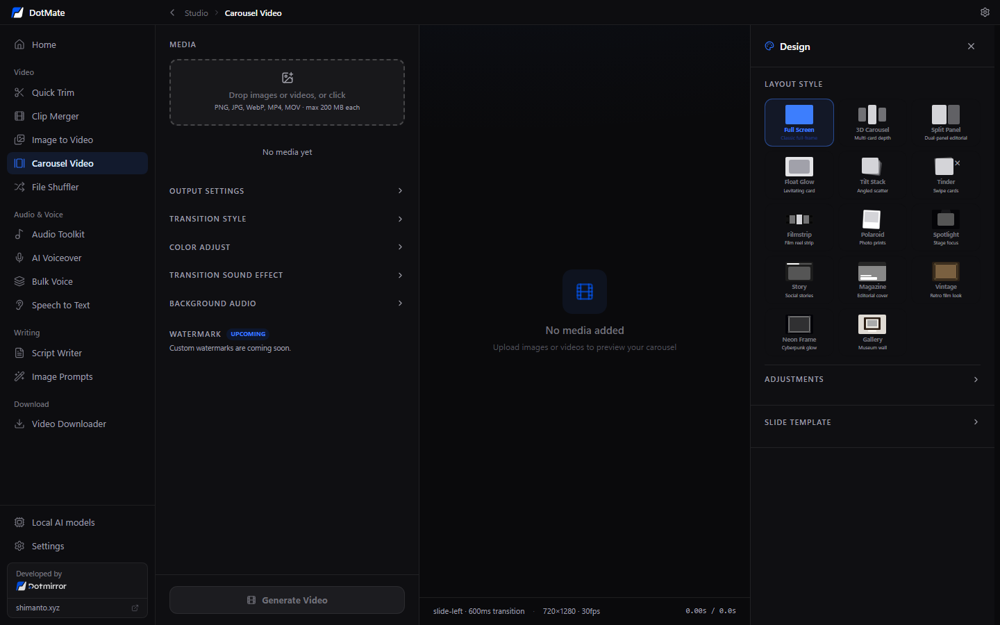
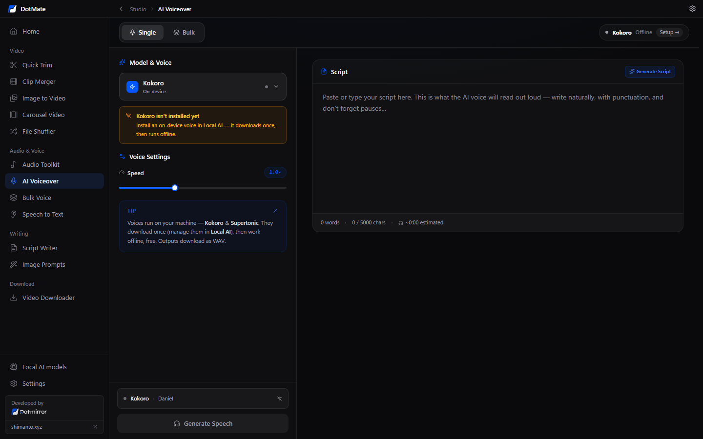
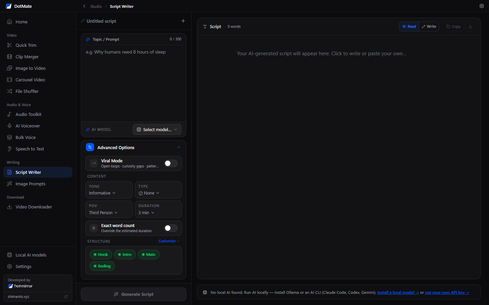
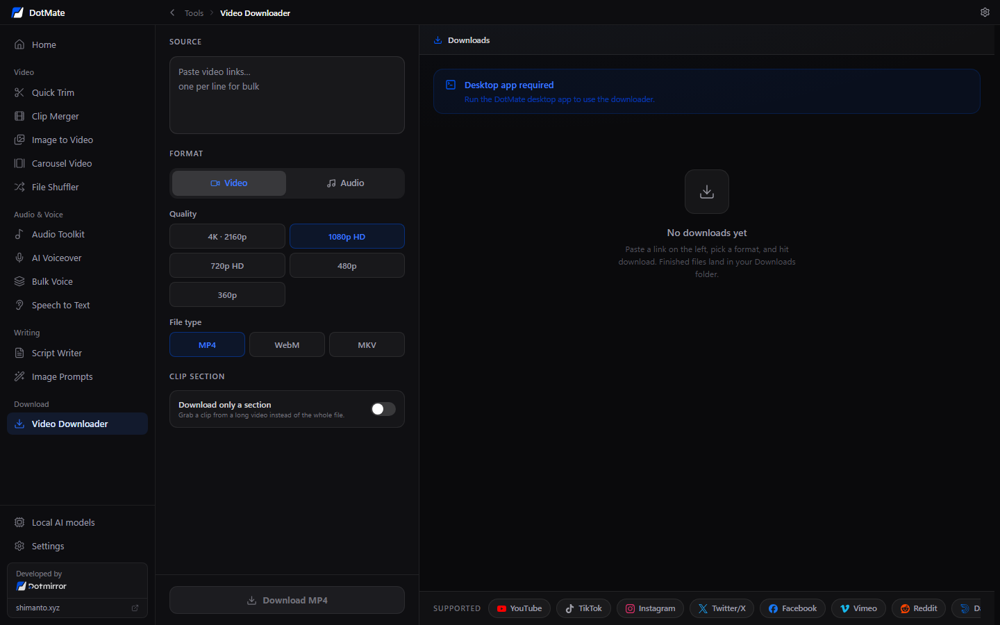

Quick Trim
Batch-trim many videos with a draggable range and export clean MP4s.
Trim and merge videos, turn images into videos, download from YouTube & TikTok, transcribe with Whisper, create voiceovers with Kokoro and write scripts with local AI — in one free desktop app that runs 100% on your computer.

Features
Replace a handful of websites and paid apps with one fast, private desktop toolbox.
Batch-trim many videos with a draggable range and export clean MP4s.
Pair main clips with random B-roll, add background music and aspect presets.
Slideshow maker with effects, colour adjust, progress bar, watermark and music.
Images + videos with 18 cinematic transitions — perfect for Reels, Shorts and TikTok.
Randomise names, order and dates of video files; export as ZIP or folder.
Merge, loop or extract audio from any audio or video file (MP3 / WAV).
Offline text-to-speech with natural Kokoro voices — no ElevenLabs bill.
Turn dozens of scripts into dozens of voice files in a single run.
Transcribe audio, video or your mic with Whisper, privately on your PC.
YouTube and short-form scripts with tone, length and structure controls, powered by local AI.
Split a script into scenes and get an image prompt for each one.
Download from YouTube, TikTok, Instagram, X and 1000+ sites via yt-dlp.
Screenshots




Privacy & local AI
DotMate has no server. It downloads open-source engines once, then does all the work locally.
| Task | Local engine |
|---|---|
| Speech to text | whisper.cpp · tiny / base / small |
| Text to speech | Kokoro-82M via sherpa-onnx · ~330 MB |
| Script writing | Ollama (Llama 3.2, Qwen 2.5…) or Claude Code / Codex / Gemini CLI — or, optionally, your own Claude, OpenAI, Gemini or OpenRouter API key |
| Video & audio | WebCodecs + FFmpeg |
| Downloads | yt-dlp |
Get started
Grab DotMate_x64-setup.exe from the latest GitHub release.
Run the installer. On first launch, a setup screen fetches FFmpeg, yt-dlp and the AI models you pick.
Trim, merge, voice, transcribe and write — all offline, all free.
# Or build from source (Node 20+, Rust, VS Build Tools, CMake, LLVM)
git clone https://github.com/shimentosh/dotmate.git
cd dotmate && corepack enable && pnpm install
pnpm tauri:build
FAQ
Yes. DotMate is free and open source under the MIT licence. There are no credits, watermarks, accounts or paid tiers.
Yes. After a one-time download of FFmpeg and the AI models you choose, every tool except the Video Downloader works without internet.
No. All processing happens on your computer. DotMate has no server, no login and no telemetry.
Yes, optionally. Paste your own API key in Settings → API Keys and that model appears in the writing tools. Only the text you write is sent to that provider — your videos and audio never leave your computer. Remove the key any time to go back to fully local.
No. Whisper and Kokoro run on a normal CPU. Ollama models run faster with a GPU, but small models like Llama 3.2 3B work on most modern laptops.
For many everyday jobs — batch trimming, slideshows, carousel videos, voiceovers and transcripts — yes, and it runs offline. It is not a full timeline editor.
Windows 10 and 11 are supported today. macOS and Linux builds are on the roadmap — contributions welcome!
Made by
If DotMate helps you, a ⭐ on GitHub helps other creators find it.